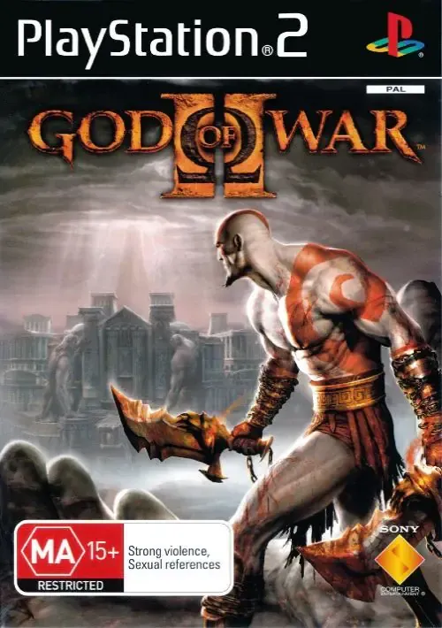
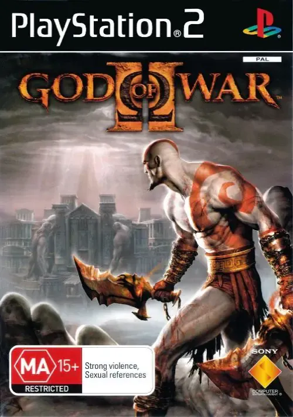
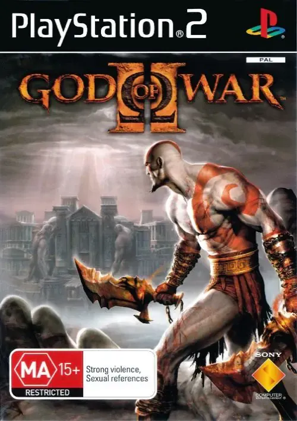

Lanzamiento: 2000
Formato: DVD
Características: Compatibilidad con juegos de PS1, reproductor de DVD integrado, y una enorme biblioteca de juegos.
Éxito:La consola más vendida de la historia con más de 155 millones de unidades.
Actualidad: Retrocomputación y coleccionismo.

Una historia emocional de sacrificio. Un joven llamado Wander viaja a una tierra prohibida para derrotar a gigantes y devolverle la vida a una chica.
Acción y estilo frenético. Controlás a Dante en sus inicios, enfrentando hordas demoníacas y a su propio hermano en una batalla por el destino del mundo.
Mitología griega en acción. Kratos, traicionado por los dioses, busca venganza y la manera de alterar su destino usando los poderes del tiempo.
Crimen, traición y libertad total. Carl "CJ" Johnson regresa a su barrio para descubrir quién mató a su madre, y termina envuelto en una guerra de bandas y corrupción policial.
Origen de Big Boss. En plena Guerra Fría, Naked Snake debe evitar una crisis nuclear, rescatar a científicos y enfrentar a su antigua mentora en la jungla soviética.